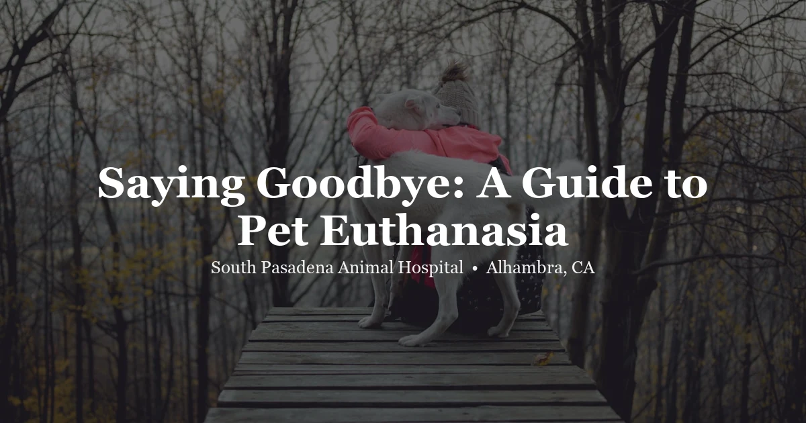

April 27, 2026 · 9 min read
Saying Goodbye: A Compassionate Guide to Pet Euthanasia

There's no part of veterinary medicine we approach more carefully than this one. The decision to euthanize a beloved pet is one of the heaviest a family can face, and it rarely comes with a clear, obvious moment. Most of the time it's a gradual reckoning — watching a pet you love stop being themselves, asking the same question again and again: is it time?
We can't answer that for you. But we can help you think through it honestly, and we can tell you exactly what to expect when the time comes. If your pet is ill and you want to talk through end-of-life options, reach out to our team. We take these conversations seriously.
Figuring Out When It’s Time
The question we hear most often: "How do I know?" Honestly — there usually isn't a clean answer. A single obvious moment is rare. More often it's a gradual accumulation: more bad days than good, fewer moments of engagement, a pet who used to greet you at the door and now doesn't lift their head.
A framework that helps is the HHHHHMM Quality of Life Scale from veterinary oncologist Dr. Alice Villalobos. Seven dimensions to honestly assess:
- Hurt — Is pain being managed? Can they breathe without effort?
- Hunger — Eating enough to maintain basic nutrition?
- Hydration — Drinking adequately?
- Hygiene — Can they be kept clean? Is there dignity in their daily care?
- Happiness — Moments of engagement still? Responding to you, showing interest, experiencing anything pleasurable?
- Mobility — Can they move enough to meet basic needs — getting to water, using the litter box, finding a comfortable position?
- More good days than bad — Over the last week. Honestly.
When the last one tips — when bad days consistently outnumber good — the balance has shifted. That's the signal to have the conversation.
Some pets signal it directly: they stop seeking interaction, stop responding to things they've loved their whole lives, disengage from the family and seem to be waiting. Others are in visible acute distress. Both are valid circumstances.
Something we say directly to families in this situation: choosing euthanasia before a pet reaches crisis is not giving up too early. It's using the one option we have for animals that we can't provide for humans — preventing prolonged suffering before it starts. Choosing proactively, while there's still some quality of life left, is an act of love, not failure.
Preparing Before the Appointment
Once the decision is made, you don't need to rush unless your pet is in acute distress. A day or two gives the family time to say goodbye in a way that feels right. Let your pet have their favorite foods — this is genuinely not the time for dietary caution. Spend time with whatever they still enjoy, within what their body allows. Think through who wants to be present, including whether children want to come or would rather say goodbye at home beforehand. Arrange for someone else to drive — you won't be in a state to, and that's completely normal.
Call us ahead of the appointment to go over the logistics — arrival, paperwork, payment — so those things don't intrude on the moment itself. We'd rather handle the administrative part before you walk in.
What Actually Happens
Most of the anxiety around euthanasia comes from not knowing what to expect. Here's the sequence at our clinic:
We give a sedative first — an injection, usually into the muscle or under the skin — before anything else. Takes about 5–10 minutes to take full effect. The pet becomes deeply relaxed, often lying down, appearing sleepy. This step matters. It means the pet is completely at ease before we place an IV, and it means the final injection is given into a fully relaxed patient with no anxiety. We don't skip this step.
Once sedated, we place a small catheter in a vein — typically the front leg. Quick, and without distress at this point.
Then pentobarbital sodium through the IV. It reaches the brain and heart within seconds. Consciousness is lost almost immediately. Cardiac activity ceases within 30–60 seconds. It's fast and completely peaceful — no pain, no awareness once the injection is given.
We confirm with a stethoscope. Then you take as long as you need in the room.
One thing we always mention before the appointment: your pet's eyes may remain partially open, and there may be a final slow sigh or a muscle twitch after consciousness is already gone. These are passive physiological reflexes. Not pain, not awareness. People who aren't expecting them find them distressing, which is why we say it beforehand.
Whether to Be in the Room
No right answer. Many families find that being present is deeply meaningful — for them and for their pet. Familiar smell, a familiar voice, a hand they know — that matters to animals. Many pets pass more peacefully with someone they love beside them. We believe that.
Others find it impossible and step out after saying goodbye while the pet is sedated. That's a legitimate choice too. Children shouldn't be pressured either direction. Neither should adults. Call us beforehand if you want to know exactly what you'd see. Having that information usually helps people make a decision they feel at peace with afterward.
Aftercare
We discuss this when scheduling, or quietly at the end of the appointment. You don't need to know in advance. The main options:
- Private cremation — your pet is cremated individually, ashes returned in an urn. Many families scatter them or keep them
- Communal cremation — cremated with other animals, ashes not returned. Lower cost
- Home burial — permitted in parts of LA County, but regulations exist on depth and location. Check before committing to this
- Pet cemetery — available through several Southern California services
There's no rush on this decision. Take your time.
The Grief Is Real
Pet loss is grief. The bond was real, and the loss hurts proportionally to what that bond was. Some people have others around them who understand that. Some don't — they encounter minimizing and well-meaning but unhelpful commentary. Your grief is real and legitimate regardless of what anyone else thinks about it.
Resources that help: the UC Davis Pet Loss Support Hotline at 800-565-1526 (free, staffed by veterinary students), the AVMA pet loss resource page at avma.org, and ASPCA pet loss support at aspca.org. Some Los Angeles-area humane societies and vet practices host grief support groups.
Grief doesn't follow a schedule. Relief mixed with sorrow is normal. Guilt about the timing is almost universal, even when the decision was clearly the right one. The guilt means you cared. It doesn't mean you were wrong.
Exotic Pets
The same quality-of-life thinking applies — rabbits, guinea pigs, birds, reptiles, small mammals. The emotional weight is identical. What's different is that humane euthanasia in exotic species requires a veterinarian with real experience in those animals. Anatomy, physiology, and safe methods are different from dogs and cats.
Rabbits can be euthanized via IV in the ear vein with pre-sedation, same as dogs and cats. Guinea pigs and small rodents receive inhalant anesthetic first, then injection under deep anesthesia — AVMA-compliant. Birds get gaseous anesthetic prior to any other step; avian veins are small and fragile and require experienced, careful handling.
Regardless of species: a peaceful, painless passing is the goal. If your exotic companion is reaching end of life, reach out to us before the situation becomes a crisis. We can help you think through the timeline and make this as gentle as it can be.
Frequently Asked Questions
How do I know when it's time to euthanize my pet?
The HHHHHMM scale gives structure to what can feel like an impossible question: Hurt, Hunger, Hydration, Hygiene, Happiness, Mobility, More good days than bad. Track it over a week. When bad days consistently outnumber good ones, when moments of real comfort or enjoyment become rare — that's the signal. You don't have to make the call alone. Call us.
Is it wrong to euthanize a pet who is still eating?
No. Eating is one dimension of quality of life, not the whole picture. A pet can continue eating through significant pain, loss of function, and disengagement from everything they used to find meaningful. We look at all seven dimensions, not just the food bowl.
What actually happens during euthanasia?
Sedative first — the pet becomes deeply relaxed and sleepy. Then IV placement in the front leg once they're completely at ease. Then pentobarbital through the IV — consciousness is gone in seconds, heart stops within 30–60 seconds. Fast and entirely peaceful. No pain after the sedative takes effect.
Should I be present during my pet's euthanasia?
Personal decision, and neither answer is wrong. Being present matters to many pets — familiar presence helps them stay calm. Others find it too hard to be in the room. Call us in advance if you want to know exactly what you'd see. That information helps most people make a decision they feel okay about afterward.
What are my options after my pet passes?
Private cremation (ashes returned), communal cremation (ashes not returned), home burial (check LA County regulations first), or pet cemetery. You don't have to decide the same day. We'll walk you through the options whenever you're ready. We're here for this part too.